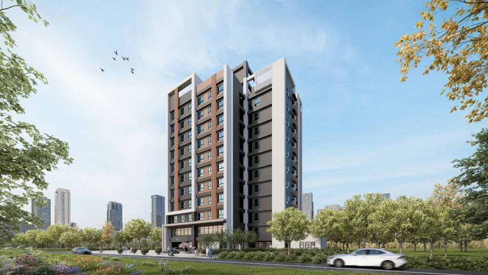
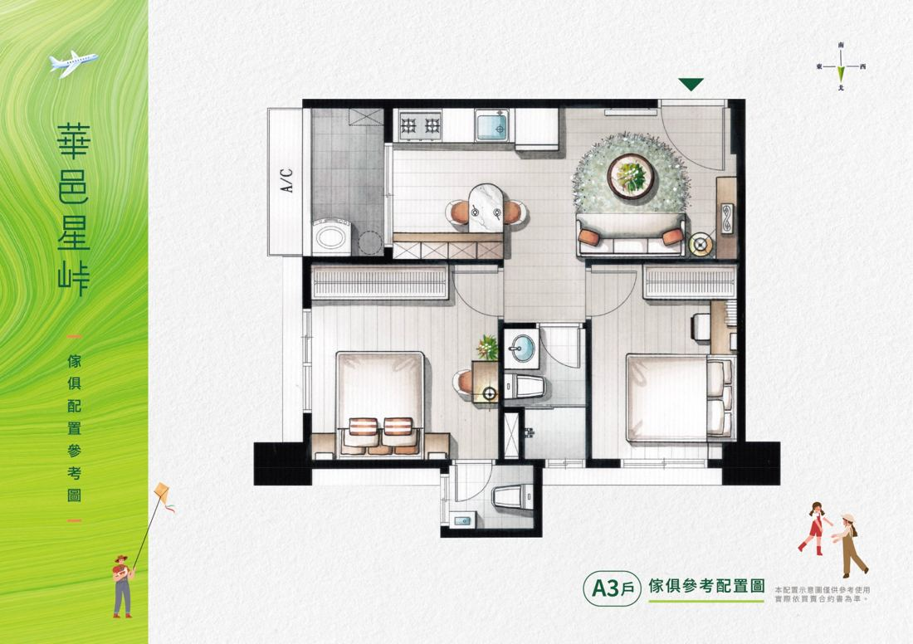
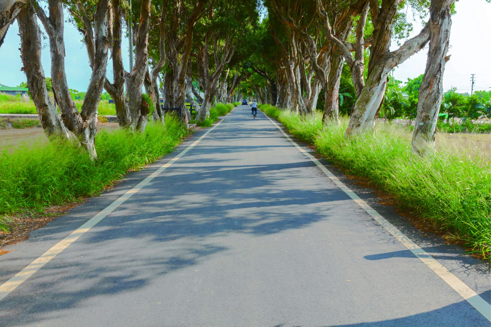

山景・學區・慢生活

ABOUT THE RESIDENCE
本建案為網站示範用的虛構資料。
臺北市・文山區
FLOOR PLAN
3房2衛
34坪
家具配置僅供參考，依原圖說明及買賣契約為準。

NEIGHBORHOOD
步行可達國小、國中，周邊補習與才藝機能完整，孩子上學不必接送。

鄰近仙跡岩與景美溪河濱步道，假日走出家門就是綠意。
LOCATION
留下聯絡資訊，安排適合你的賞屋時間。
私人測試版：請使用虛構姓名與電話。資料會保存；完成串接後也會寫入測試試算表。
築里整合行銷有限公司為測試預約功能蒐集姓名、電話及賞屋需求，資料保存在本平台；完成串接後也會寫入公司總表及本案專用試算表，目前請僅使用虛構測試資料。若要查詢、更正或刪除，可聯絡 zhulixdesign@gmail.com。可自由選擇不提供資料，但將無法送出預約。正式上線前將另行確認保存期間與轉交方式。